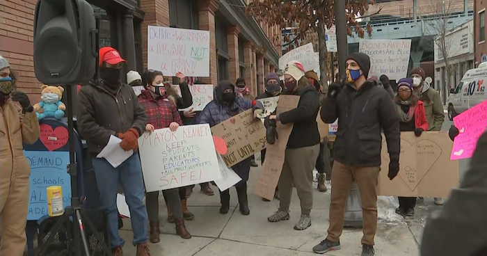

The School District of Philadelphia is Failing Students
25 March 2020

Image Credit: CBS News Philadelphia
Friday March 13th was the messiest day I have experienced as an educator. Students were squirting hand sanitizer on everything, misappropriating surgical gloves, squirting hand sanitizer on the gloves, then messing around six inches from each other’s faces. The level of fear and panic was palpable. We were shedding students by the minute as parents picked up their children early. By 2:30 PM, I had eight out of twenty students left.
I tried my best to calmly level with students about proper sanitary procedures, and went on conducting class—math puzzles and a review game. With all of the craziness flying around, students were eager to latch onto something that felt normal, even just for a few minutes. They were arguing over who had the correct puzzle answers, celebrating victories, and asking me was this for credit. Yes, I said, of course it is. Students thrive in an environment with as much direct interaction and validation as we can provide: it means their work was worthwhile, that the time and energy they spent was contributed toward long-term goals of good grades and successful futures. When they ask, “Is this for credit?” what they are really asking is, “Do you see the work I’m doing? Will you validate my effort?” to which my answer is always yes, of course I will.
Unfortunately for our kids, Philadelphia educators are forbidden to give our students credit during this stage of the outbreak. When announcing its first public policy for school closures, the District cited equity concerns—that some students are without Internet access, or have responsibilities like work or childcare.
What the District does not acknowledge is that we have been dealing with those issues every day since September.
It’s our job to help students who may not be able to do homework, miss a lot of school, or are otherwise disengaged from their studies. Figuring out how to educate and serve each student equitably is our every day job, outbreak or not. We could hold group instructional sessions over the phone, help families get access to school-issued laptops and free Internet offered by Comcast, and provide educational materials for younger siblings so the whole family can keep learning together.
The problem is, the School District hasn’t seemed to trust us to do our jobs at the very moment our kids need us most.
On Monday March 16th, my colleagues and I were furiously contacting students individually, getting them set up to learn however they were able. The overwhelming majority of students responded and were ready to learn. After the District announced their no-credit policy on Wednesday March 18th, we witnessed a profound drop-off in student engagement. Those who remained expressed frustration at not being able to receive credit for their work. Should schools remain closed, this early policy will mark a failure of the public school system to help our young people stay engaged and prepare for their futures. More importantly in my eyes, it will mark a societal failure to support our children’s mental wellbeing in a time of unprecedented crisis.
While the District has since announced a plan to distribute laptops and shift to remote learning by mid-April, these future promises are too little, too late. By that time students will have lost a month of instruction, and a month of structured connection with their teachers and peers. Helping our kids feel safe and validated within their school communities is important now more than ever, and we have already lost too much time. Young people and teachers alike need to see courage, creativity, and a sense of urgency from District leadership. With growing national and international coverage of Philadelphia’s education policies, other states will be looking to us to set the example. I only hope that educators, with the help of the public, will be able to convince the District to let teachers support our kids the best we can. You can leave your opinion for Superintendent Hite at (215) 400-4100.
This article originally appeared in The Philadelphia Inquirer on 25 March 2020.